Five choices, no more
The home screen offers five labelled circles in one cluster. Fewer options means faster, calmer decisions.
Case study 01 · Education
Reading, drawing, maths and video for children aged 5–9, including autistic children. Nothing moves, opens or changes unless the child asks it to.
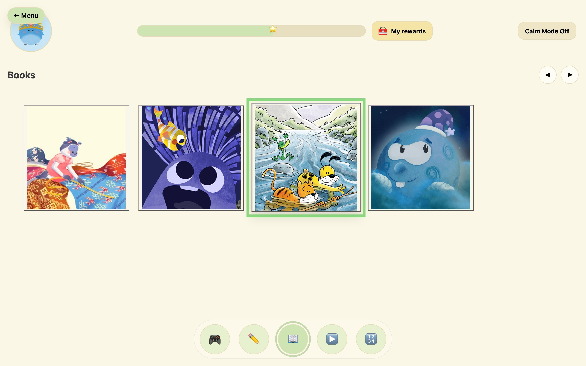
Bright colours, dense screens and motion that plays by itself can turn a lesson into something a child has to manage rather than enjoy.
Alzahrani et al. on incidental animation. Scope and the UK Government Digital Service on predictable layouts, plain language and minimal motion.
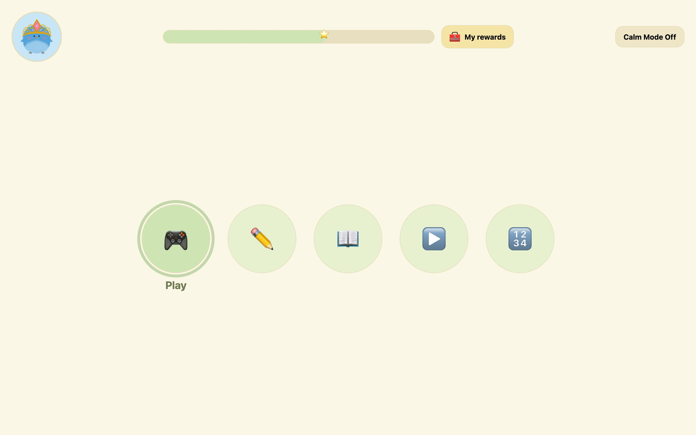
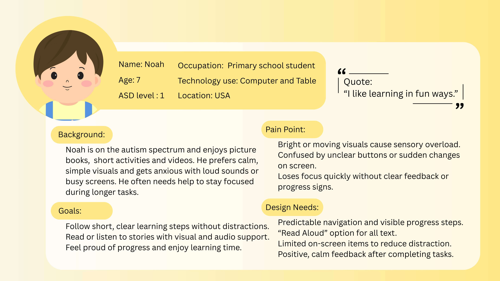
I like learning in fun ways.
Picture books, short activities and videos. Bright motion, unclear buttons and sudden changes get in the way.
What gets in the way
What the interface must do
A short survey explored colour preferences, tolerance to sound, feedback style and reading habits. Safeguarding and ethics constraints limited it to four responses, two from autistic children, so it guided early direction only.
Decisions were grounded in HCI theory, autism-friendly guidance from Scope and GDS, research on sensory load and gamification, and a competitor analysis of children’s learning products.
Filter by principle to see which parts of the interface it shaped.
The home screen offers five labelled circles in one cluster. Fewer options means faster, calmer decisions.
142px navigation circles and 260px book cards reduce mis-taps for children with less precise motor control.
Arrow keys move a selection ring. A book opens only on an explicit press of Open, Enter or Space.
Leaving the reader or progress page asks first, shown by the child’s own character, so a place is never lost by mistake.
Lives in the top bar, not a settings menu. Mutes the background, hides the progress bar and suppresses motion.
Soft sage on warm off-white. Green marks only selection and progress, so colour always means something. Text targets 7:1.
Every navigation button pairs a familiar symbol with a plain label, for children who read less or interpret images literally.
Points, shop and goals live on the Progress page. A labelled My rewards button, the same size as Calm Mode, opens it. Testers missed an unlabelled chest; the label is there so the page is found by recognition.
All four maths games and every drawing activity are untimed, because countdowns raise anxiety and lower accuracy.
After 90 seconds without a page turn, the reader offers a five-minute break. Affirmations appear every 45 seconds.
Avatar, progress, My rewards and Calm Mode sit in the same place on every screen, so there is nothing to relearn.
The carousel works with arrow keys and on-screen arrows, with a clear focus state on every control.
This is the interaction pattern at the heart of the reader. Move the ring with the arrows or your keyboard; only Open starts a book. Then switch on Calm Mode.
In the product, HorizontalCards owns the selection state and the parent page owns opening, so the two cannot be triggered by the same action.
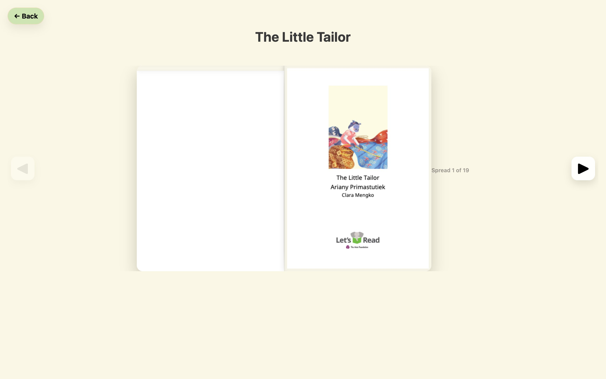
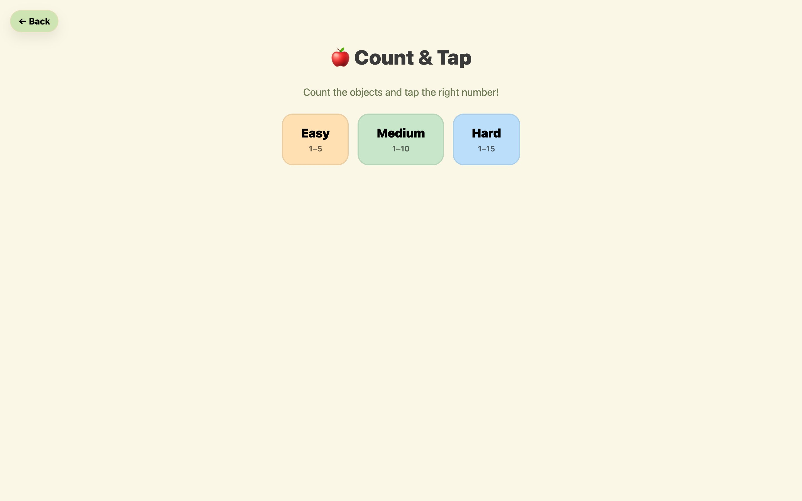
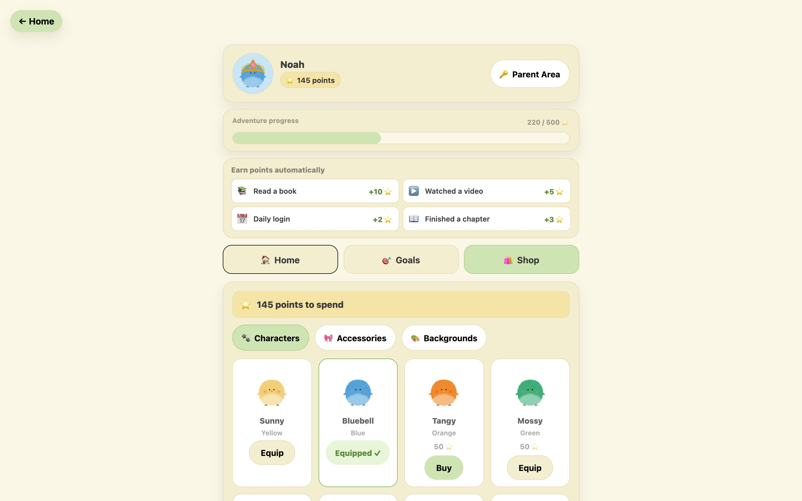
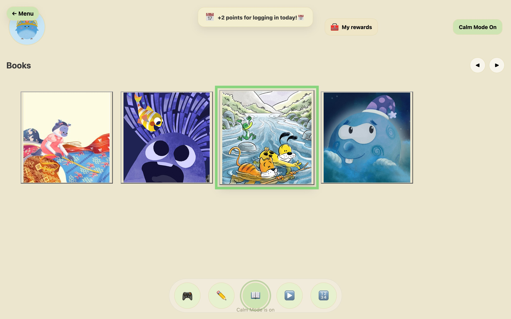
A single circular cluster holds every section. The same buttons shrink to a bottom bar inside each section, so the way back is always visible.
A two-page flipbook built on PDF.js. Finishing the last spread awards 10 points automatically, and Back always asks before leaving.
Points arrive automatically: 10 for a book, 5 for a video, 2 for a new day. They unlock twelve characters, twelve accessories and six backgrounds.
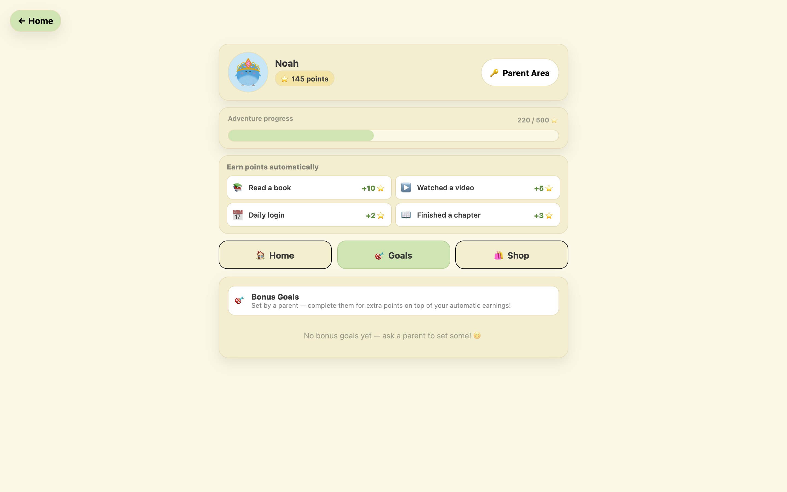
A PIN-protected parent area shows books read, videos watched and days active. Parents set goals such as “Read 3 books”, and the child claims the bonus.
Count & Tap, Number Bonds, Shape Match and Times Tables, each with several difficulty levels and no time pressure at all.
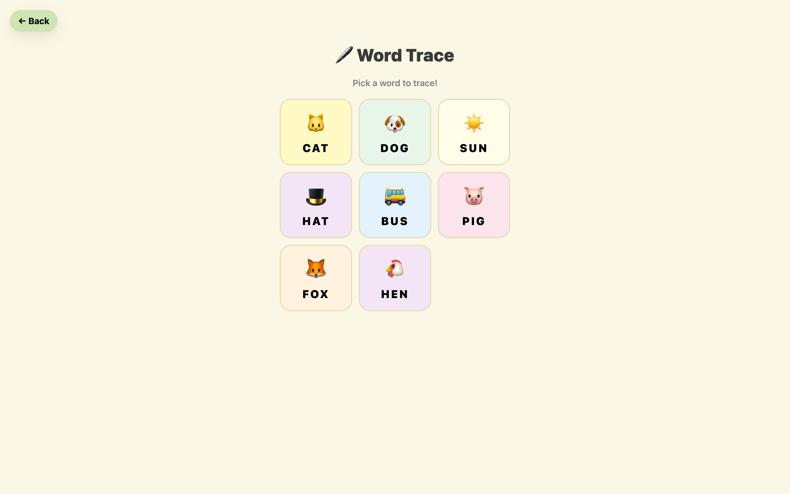
Word tracing and colouring diagrams that teach as they go: plant parts, the water cycle and the solar system.
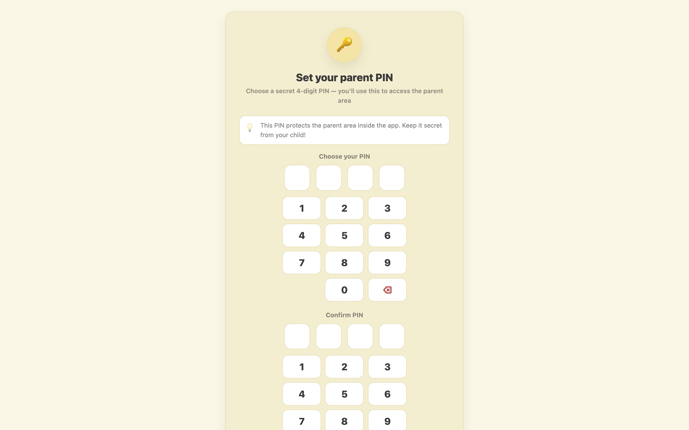
A parent creates the account and sets a four-digit PIN. The child then chooses one of twelve characters, which follows them through the whole platform.
Drag the handle, or focus it and use the arrow keys. Calm Mode swaps the background to muted cream, hides the progress bar and suppresses motion, and the choice is saved to the child’s profile.
The design moved in three steps: structure first, then the visual design in Figma, then the React build.
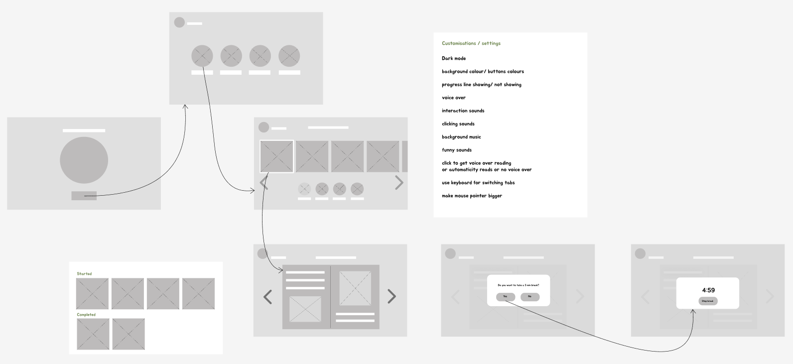
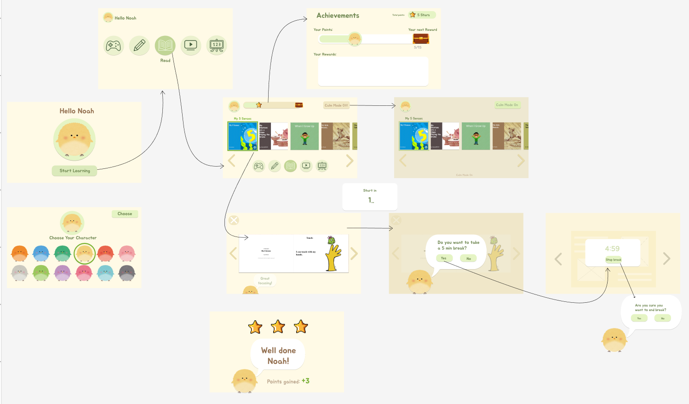
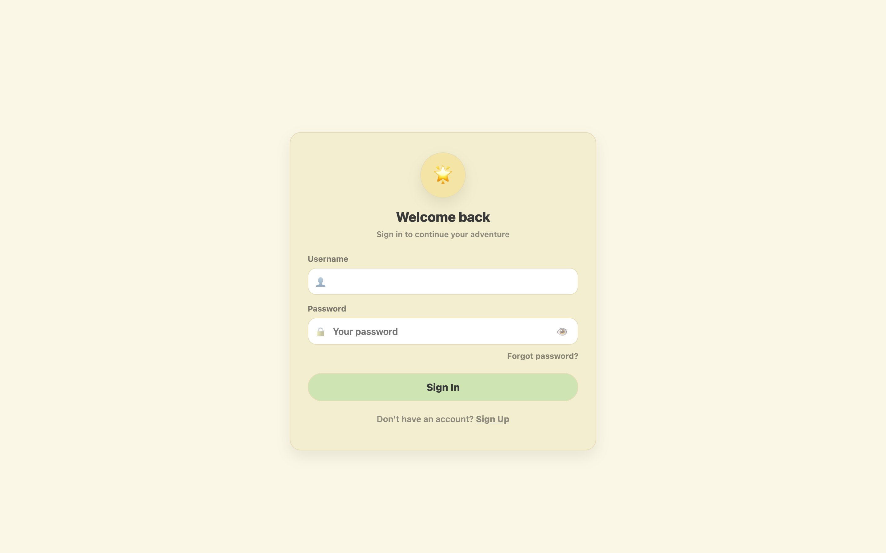
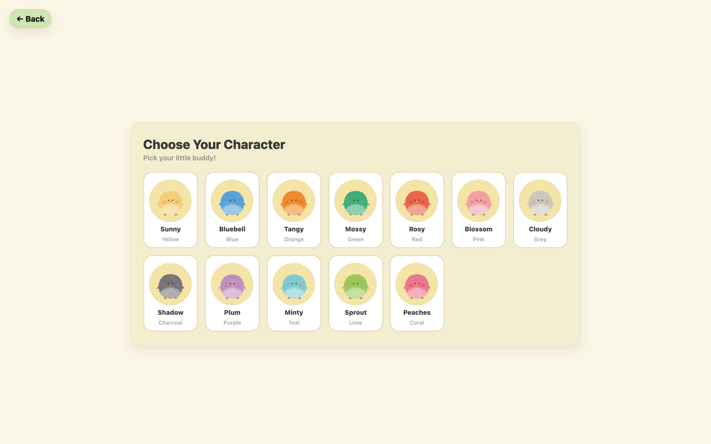
The app is a React single-page application with pages routed by React Router and reusable components shared across sections: TopBar, HomeNav, HorizontalCards, BackConfirmSheet, ReadingWatcher and PdfFlipBook.
Selection state (activeId) lives in the carousel, while opening is a separate onSelect callback owned by the page. The error-prevention rule is structural, not just visual.
Profiles, points, unlocked items and goals persist in localStorage, so the app works without a server.
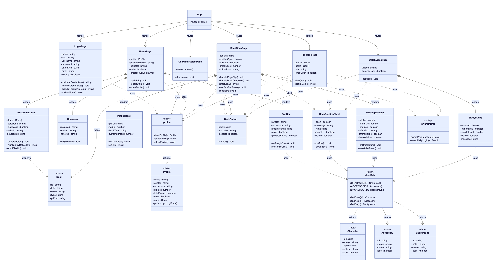
The task test was with three adult proxies. A short survey of four children, two of them autistic, guided the early design, but it was too small to treat as a usability test. Formal sessions with children were not possible in the time available: safeguarding, ethics approval and school access could not be put in place. Proxy testing can find a control that does not look clickable. It cannot show how children would actually use the platform.
The core flow worked. The treasure chest did not: two of three participants did not realise it was a button. It lacked affordance, breaking H1 and H6. The dashboard also used smaller, denser buttons than everywhere else, which undermines the predictability the design depends on.
I found it easy to choose a game and get started.Participant 1
I liked the instant feedback after answering.Participant 1
I didn’t realise the treasure icon could be clicked.Participant 1
The buttons are smaller and harder to use.Participant 3
| Heuristic | Finding | Severity |
|---|---|---|
| H1 Visibility of status | Treasure chest affordance unclear | High |
| H3 User control | Confirmation prompt on exit works well | Pass |
| H4 Consistency | Dashboard button sizes inconsistent with the rest | Medium |
| H5 Error prevention | Separating selection from activation is effective | Pass |
| H6 Recognition over recall | Treasure chest relies on recall, not recognition | High |
| H8 Minimalist design | Calm Mode palette reduces stimulation | Pass |
The two issues testers found are now fixed in the product. The evaluation above is what they saw. The screens below are what the product does now.
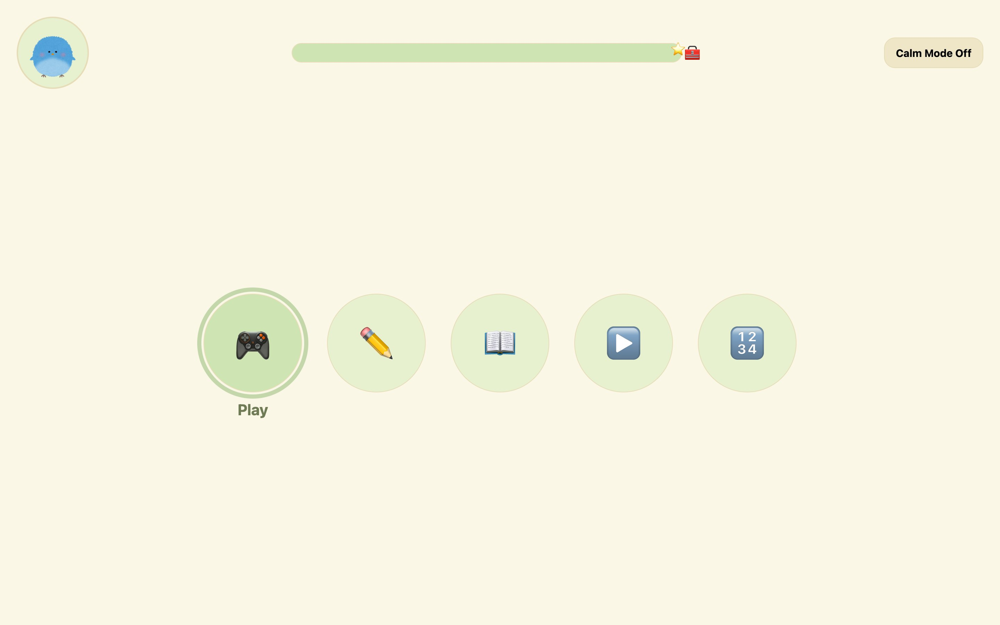
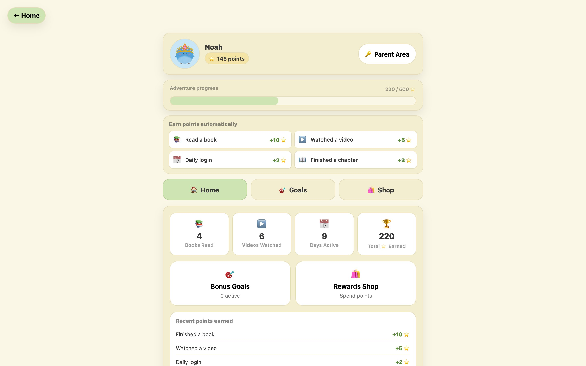
Connect the shared useReadAloud hook to the flipbook so each page can be spoken for early readers.
Planned audio feedback was held back: it could itself be a sensory barrier. It should ship muted by default and be tested first.
With ethical approval, school partners and DBS clearance in place, evaluate with the real audience.
The design phase ran long. A good-enough version tested earlier would have taught more than a polished one tested late.